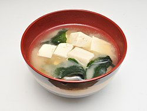

Miso Soup

Description
Miso soup is a traditional Japanese soup that starts with a dashi stock and is flavored with miso paste. Dashi is an umami-rich stock made from dried seaweed and dried fish. Miso paste, meanwhile, is a paste made from soybeans, salt, and koji rice.
The brothy soup usually contains tofu and green onions. It can also feature seaweed, mushrooms, daikon, and more.
Miso soup is traditionally served with rice.
Ingredients
- Water: This easy miso soup recipe starts with four cups of water.
- Dashi granules and miso paste: Dashi granules and miso paste give the soup a bold, savory flavor base.
- Tofu: The protein in this miso soup is a package of diced silken tofu.
- Green onions: Diced green onions add a burst of color and flavor
Steps
- Bring the water and dashi granules to a boil.
- Reduce the heat and whisk in miso paste.
- Stir in the tofu and green onions.
- Simmer and serve.